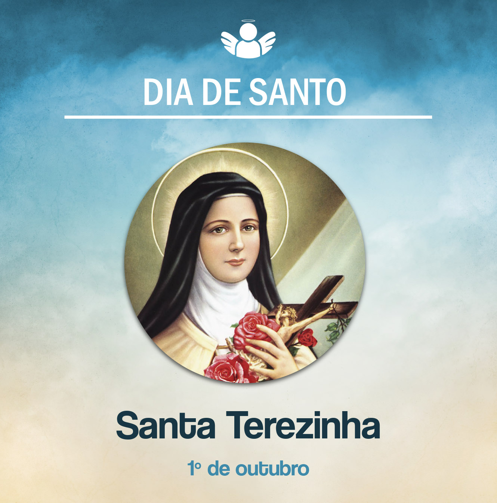

Santa Teresinha do Menino Jesus
01 de outubro de, 2020
Celebramos hoje a memória de Santa Teresinha do Menino Jesus. Seu nome de Batismo era Thérèse Martin. Ela nasceu em Alençon, França, no dia 2 de janeiro de 1873. Perdeu a mãe ainda criança. Desde pequena, almejava o desejo de ser uma religiosa carmelita.
Aos 15 anos, recebendo uma autorização do Papa Leão XIII, entrou no Carmelo de Lisieux, em 9 de abril de 1888. Recebeu o hábito de carmelita e o nome de irmã Teresa do Menino Jesus e da Sagrada Face.
Viveu sua vida espiritual de maneira muito simples. Seus relatos trazem uma profunda experiência de Deus, como ela mesma expressou. Como uma criança nas mãos do Pai, associou-se a um brinquedo que foi colocado nas mãos do Menino Jesus, para falar de sua vivência profunda de fé.
Morreu de tuberculose, aos 24 anos, em 30 de setembro de 1897. Suas últimas palavras foram: “Oh! Amo-vos. Deus meu, amo-vos!”. Deixou muitos escritos que foram recolhidos no livro “História de uma alma”. A obra foi traduzida em várias línguas, propagando sua história de vida a todo o mundo.
Foi beatificada em 1923 e canonizada em 1925. Em 1927, o Papa Pio XI a declarou Padroeira das Missões. Mesmo vivendo na clausura do Carmelo, tinha um coração missionário e se considerava uma missionária. Em suas orações, trazia a Igreja, os evangelizadores e as vocações. O Papa São João Paulo II a proclamou Doutora da Igreja.
Que ensinamentos a vida de Santa Teresinha nos ilumina hoje? Assim como viveu Santa Teresinha do Menino Jesus, somos chamados a nos deixar conduzir pelo amor de Deus, nas pequenas coisas do dia a dia. Com simplicidade de coração, a viver a plenitude do amor. Seu pensamento expressa bem a sua vida espiritual quando diz: “Quero passar o céu fazendo o bem na terra”.
Santa Teresinha do Menino Jesus, rogai por nós!